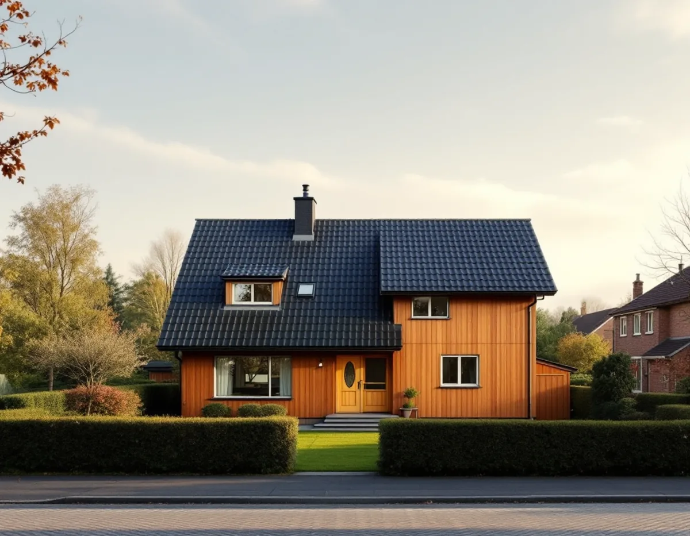
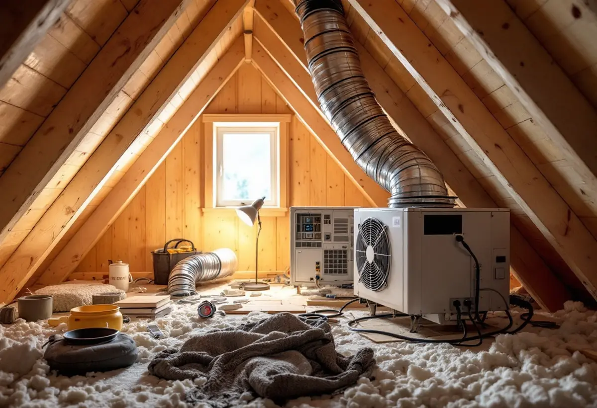

Radonmätning
Mät under vintern före renoveringen om det går.

När ett hus totalrenoveras ändras ofta ventilationen, uppvärmningen och ibland grunden, och då kan radonhalten också ändras.
Beskriv jobbet kort.
Något blev fel. Kontrollera uppgifterna eller ring 08 12 410 276.
Vi tittar på jobbet på plats innan du får offert.
Du ser vad som ingår och vad det kostar.
Vi drar av ROT direkt och sköter ansökan.
Geal Entreprenad AB, Bromma. Org.nr 559303-7566.

Geal Entreprenad AB totalrenoverar villor i Vallentuna och tar med radonfrågan i planeringen.
Enligt Vallentunas översiktsplan fanns det 2017 drygt 13 000 bostäder i kommunen, och omkring 65 procent av dem var småhus. Sedan millennieskiftet har knappt 3 000 nya bostäder tillkommit, de flesta i tätorterna.
Många av villorna har därför några decennier på nacken, och för en del ägare är det dags för en större renovering. När huset ändå byggs om finns det skäl att också se över luften inomhus.
Vallentuna kommun skriver att det inte finns något generellt krav på att du som privatperson ska känna till radonhalten i ditt hus, men att det kan vara bra att veta för din hälsa och vid en försäljning. Kommunen räknar upp tillfällen när mätning bör göras.
Två av dem gäller en totalrenovering direkt: vid om- och tillbyggnad av småhus, och vid förändring av ventilation eller uppvärmningssystem. Kommunen nämner också husköp, hus i områden med höga halter av markradon eller byggda med blåbetong, och att det gått tio år sedan senaste mätningen.
En radonmätning görs under perioden 1 oktober–30 april, och mättiden är minst två månader. Det vanligaste är dosor med spårfilm som placeras i huset, oftast i sovrum och ett rum till, till exempel vardagsrummet.
Du kan göra mätningen själv eller ta hjälp av en radonkonsult. Kommunen påpekar att radonmätningen vid ansökan om bygglov måste göras av något av de företag som kommunen godkänt, och att mätningen då kan behövas för att du ska få slutbesked.
Den enklaste ordningen är att mäta under vintern innan renoveringen och sedan igen vintern efter. Vet du redan före att halten är hög kan åtgärderna byggas in i renoveringen, till exempel tätning av genomföringar i grunden eller en ny ventilationslösning.
Radon varken syns, luktar eller smakar, och kommunen skriver att det enda sättet att upptäcka det är att mäta. Om ventilation och badrum i övrigt kan du läsa under badrumsrenovering i Vallentuna.
En totalrenovering gör ofta huset tätare: nya fönster, ny isolering och tätade genomföringar. Det sparar energi, men det ändrar också hur luften rör sig i huset. Därför ser vi över ventilationen i samma projekt, så att det tätare huset får den luftväxling det behöver.
Kommunen räknar just ändrad ventilation som ett tillfälle då radonhalten bör mätas. Ett nytt ventilationssystem och en mätning vintern efter hör därför ihop.
Boverket kan ge radonbidrag till småhusägare vars hus har för höga radonhalter och där radonsanering behövs. Kommunen skriver att ansökan görs hos länsstyrelsen i det län där huset ligger, och att den måste göras innan du börjar saneringen.
Det är en viktig detalj i en totalrenovering. Har saneringsåtgärderna redan byggts in innan ansökan skickats kan bidraget gå förlorat. Kommunen visar också inskickade mätningar på kommunkartan, vilket ger en bild av halterna i närområdet.
Mät under vintern före renoveringen om det går.
Vi går igenom huset, ventilationen och grunden.
Varje del och varje moment står för sig.
Radonbidrag söks innan sanering, anmälan där det krävs.
Ventilation och tätning byggs in i arbetet.
Mät igen vintern efter renoveringen.
För ett småhus räknar Skatteverket bland annat att riva väggar och bygga om planlösningen, arbeta med tilläggsisolering, sätta kakel och klinker och göra förbättringsarbeten som rotarbete. Radonsanering kan ge avdrag, men inte själva mätningen.
Avdraget är högst 30 procent av arbetskostnaden och högst 50 000 kronor per person och år, och äger ni huset två kan båda göra avdrag. Material och resor ger inget avdrag. Geal drar av beloppet direkt på fakturan.
Husets storlek och skick, ventilationen och grunden, el och VVS och vilka ytskikt du väljer. Läs mer under villarenovering. Efter ett gratis platsbesök får du ett skriftligt kostnadsförslag.
Renovera hela huset eller lägenheten.
Villarenovering →Takbyte, takbesiktning och plåtarbeten.
Takläggare i Vallentuna →Villaområden och gårdar.
Takrenovering i Vallentuna →Inom eller utanför plan, avlopp och brunn.
Attefallshus i Vallentuna →Nytt våtrum, Roslagsvatten och egen brunn.
Badrumsrenovering i Vallentuna →Ritningar, grannar och kommunens mark.
Byggföretag i Vallentuna →Villor och grupphus från 1970-talet och framåt.
Fasadmålning i Vallentuna →Fritidshus, stationssamhällen och villor i Vallentuna.
Fasadrenovering i Vallentuna →Flygbuller, glasval och lov i Vallentuna.
Fönsterbyte i Vallentuna →Fönster i tegelvillan, fog och bågar.
Fönsterrenovering i Vallentuna →Golv på platta och golvvärme i villan.
Golvläggare i Vallentuna →Slipa och laga gamla golvplank.
Golvslipning i Vallentuna →Utbyggda kök, villor och gårdar.
Köksrenovering i Vallentuna →Rännor, plåttak och uthus i Vallentuna.
Plåtslagare i Vallentuna →Uthus, uterum och fritidshus.
Snickare i Vallentuna →Lovfrågan, skorstenen och arkivet.
Takbyte i Vallentuna →Spännpapp och papperstapet.
Tapetsering i Vallentuna →Ritningar, nivåer och arkivet.
Tillbyggnad i Vallentuna →Gårdar, fritidshus och villor i Vallentuna.
Målare i Vallentuna →Eller ring 08 12 410 276, mån–fre 08–17.
Beskriv jobbet kort.
Något blev fel. Kontrollera uppgifterna eller ring 08 12 410 276.